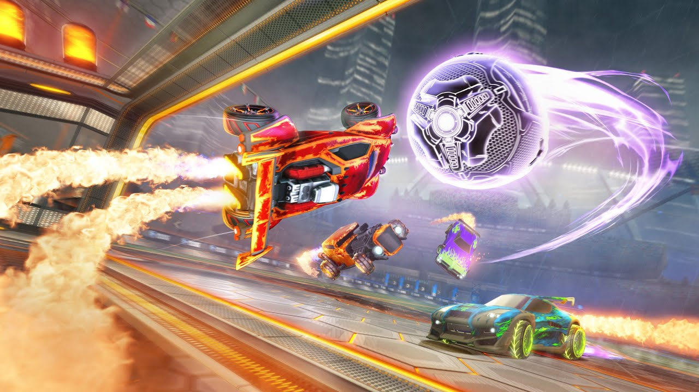

Explorando os Modos de Jogo no Rocket League: Diversão para Todos os Estilos

Rocket League é um jogo que mistura futebol e carros de alta velocidade, proporcionando uma experiência única e eletrizante. Embora a premissa seja simples — marcar gols usando veículos — o jogo oferece uma variedade de modos que adicionam profundidade, desafio e diversão. Se você está começando no Rocket League ou deseja explorar diferentes modos de jogo, aqui está um guia completo para entender todas as opções disponíveis.
Modo Casual
O modo casual é uma excelente maneira de jogar Rocket League sem a pressão dos rankings. Aqui, os jogadores podem se divertir em partidas amigáveis, aprender novas estratégias e experimentar diferentes combinações de carros e arenas. O modo casual oferece jogos 1v1, 2v2, 3v3 e 4v4, permitindo aos jogadores escolher o tipo de jogo que preferem.

Modo Competitivo
Para aqueles que buscam desafios e querem testar suas habilidades, o modo competitivo é o caminho a seguir. Este modo segue um sistema de ranking, onde os jogadores ganham ou perdem posições com base em seu desempenho nas partidas. O modo competitivo inclui jogos 1v1, 2v2 e 3v3. Além disso, existem diferentes divisões de habilidade, desde Bronze até Supersonic Legend, cada uma com seus próprios subníveis.

Modos Extra
Rumble
Neste modo, os jogadores recebem itens aleatórios que podem usar para influenciar a partida. De gancho para puxar a bola a um soco poderoso para enviá-la para longe, Rumble adiciona um elemento de caos ao jogo.
Dropshot
Em Dropshot, a arena é uma grande superfície hexagonal, e o objetivo é quebrar os hexágonos no chão para criar buracos. A bola precisa atravessar esses buracos para marcar pontos. É um modo mais estratégico, que exige habilidade no controle aéreo
Hoops
Inspirado no basquete, Hoops apresenta uma arena com cestas em cada extremidade. Para marcar, a bola deve passar por cima do aro. É um modo que exige precisão nos saltos e controle do carro no ar.
Snow Day
Baseado no hóquei no gelo, Snow Day substitui a bola por um disco e adiciona uma superfície de gelo escorregadia. O disco se move de maneira diferente da bola, trazendo novos desafios para os jogadores.
Modo de Treinamento
Para melhorar suas habilidades, o Rocket League oferece um modo de treinamento. Aqui, você pode praticar jogadas específicas, como chutes ao gol, defesa e controle aéreo. O modo de treinamento é personalizável, permitindo criar seus próprios cenários para praticar.

Modo Customizado e Partidas Privadas
Se você quiser jogar com amigos ou criar partidas personalizadas, o Rocket League oferece a opção de partidas privadas. Aqui, você pode configurar as regras do jogo, escolher a arena, o número de jogadores e até adicionar bots para preencher vagas. É um modo excelente para treinar ou organizar partidas com seus amigos.